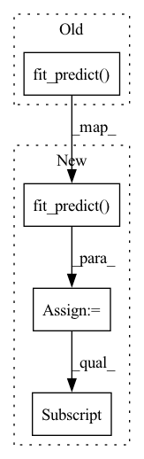

Pattern ID :33259

Before Change
def test_finishes(df):
stack = Stack([KNN()], n_folds=2, budget=1)
stack.fit_predict(df, 1)
assert True
After Change
def test_finishes(df):
stack = Stack([KNN()], n_folds=2, budget=1, seed=1)
pred = stack.fit_predict(df, 1).toPandas()
pred = pred.loc[:, ["user_id", "item_id"]].sort_values("user_id").reset_index(drop=True)
res = pd.DataFrame({"user_id": [1, 2, 3, 4], "item_id": [7, 5, 4, 7]})
pd.testing.assert_frame_equal(pred, res)
In pattern: SUPERPATTERN
Frequency: 3
Non-data size: 4
Instances
Fragment ID: 96000513
Project Name: sb-ai-lab/replay
Commit Name: 9405dd1ebbc8691fd238984b6d1862fcc0f86c3e
Time: 2020-09-15
Author: yytamm@sberbank.ru
File Name: tests/models/test_stack.py
M Class Name: AnonimousClass
N Class Name: AnonimousClass
M Method Name: test_finishes(1)
N Method Name: test_finishes(1)
M Parent Class:
N Parent Class:
M File Name: tests/models/test_stack.py
N File Name: tests/models/test_stack.py
M Start Line: 24
M End Line: 25
N Start Line: 24
N End Line: 27
'>
Before Change
def test_finishes(df):
stack = Stack([KNN()], n_folds=2, budget=1)
stack.fit_predict(df, 1)
assert True
After Change
def test_finishes(df):
stack = Stack([KNN()], n_folds=2, budget=1, seed=1)
pred = stack.fit_predict(df, 1).toPandas()
pred = pred.loc[:, ["user_id", "item_id"]].sort_values("user_id").reset_index(drop=True)
res = pd.DataFrame({"user_id": [1, 2, 3, 4], "item_id": [7, 5, 4, 7]})
pd.testing.assert_frame_equal(pred, res)
'>
Fragment ID: 96000514
Project Name: sb-ai-lab/replay
Commit Name: af83229f4f08642d7822f0d7395dd27ccba9aaf2
Time: 2020-10-13
Author: yytamm@sberbank.ru
File Name: tests/models/test_stack.py
M Class Name: AnonimousClass
N Class Name: AnonimousClass
M Method Name: test_finishes(1)
N Method Name: test_finishes(1)
M Parent Class:
N Parent Class:
M File Name: tests/models/test_stack.py
N File Name: tests/models/test_stack.py
M Start Line: 24
M End Line: 25
N Start Line: 24
N End Line: 27
'>
Before Change
def test_works(log, model):
try:
model.fit_predict(log, k=1)
except: // noqa
pytest.fail()
After Change
def test_works(log, model):
try:
pred = model.fit_predict(log, k=1)
np.allclose(
pred.toPandas().sort_values("user_id")["relevance"].values,
[0.559088, 0.816796, 0.566497, 0.783326],
)
except: // noqa
'>
Fragment ID: 96000516
Project Name: sb-ai-lab/replay
Commit Name: c5a43473cacaa2602478a09a2709699b69a8340f
Time: 2021-03-23
Author: yytamm@sberbank.ru
File Name: tests/models/test_als.py
M Class Name: AnonimousClass
N Class Name: AnonimousClass
M Method Name: test_works(2)
N Method Name: test_works(2)
M Parent Class:
N Parent Class:
M File Name: tests/models/test_als.py
N File Name: tests/models/test_als.py
M Start Line: 21
M End Line: 21
N Start Line: 21
N End Line: 25